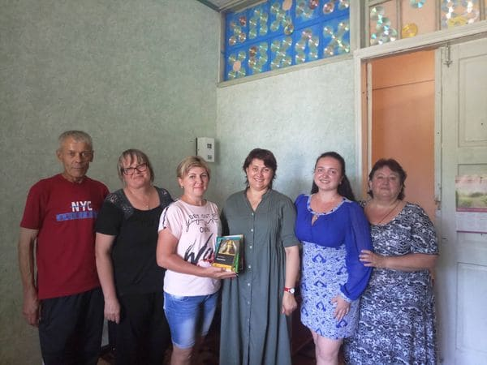
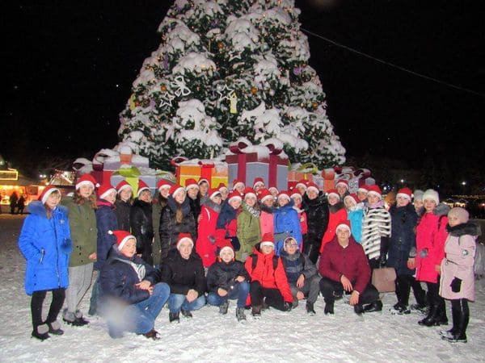

Cultural institutions:

February 24, 2021 - Lebedyn City Art Museum
named after B.K. Rudnev . Gift from the Lozowy
Fund: An ex-libris print (woodcut, mid-twentieth
century) of the world-famous futurist artist
David Burliuk, who comes from the Lebedyn
region.
December 27, 2020 - Okhtyrka Museum of the Local
Lore. Gift from the Lozowy Fund: Clay bust of
the local war veteran Mykola Chupakov, by Sumy
sculptor Oleh Prokopchuk.

December 13, 2020 - The Small Academy of
Sciences and the Okhtyrka City Center for
Culture and Leisure. Gift from the Lozowy Fund:
Laptop computer.

September 1, 2020 - Lebedyn City Art Museum
named after B.K. Rudnev. Gift from the Lozowy
Fund: A piano that is over 170 years old and
once belonged to the famous Kapnist family.
October 12, 2020 - Borys Tkachenko, writer
Lebedyn. Gift from the Lozowy Fund: Metal bust
of the writer, by Sumy artist Oleh Hryhorovych
Prokopchuk.

March 18, 2021 - Lebedyn Awards ceremony for the
festival “Talents of a Large Family - 2021”.
Gifts from the Lozowy Fund: Sweets for all 72
participants.

August 16, 2020 - Editorial office of the local
newspaper “Velykopysarivska Vorskla”. Gift from
the Lozowy Fund: Monoblock computer.

August 3, 2020 - Library of Buhruvate. Gift from
the Lozowy Fund: Smart-TV.

June 3, 2020 - Festival "Talents of a large
family" in Lebedyn. Gift from the fund: Prizes
and gifts to all participants.

February 24, 2020 - Lebedyn City Art Museum
named after B.K. Rudnev. Gifts from the Lozowy
Fund: 15 wooden picture frames.
December 11, 2019 - Armed Forces Day Velyka
Pysarivka. Gifts from the Lozowy Fund: Engraved
watches for servicemen.

December 6, 2019 - Okhtyrka Museum of Local
Lore. Gift from the Lozowy Fund: Painting by
Okhtyrka master artist Ivan Hryhorovych Shapoval
“Kaniv. Dnipro. Morning”.

November 1, 2019 - House of Children and Youth
Creativity and Station of Young Naturalists
Velyka Pysarivka. Gift from the Lozowy Fund:
Corded trimmer.

October 21, 2019 - The editorial office of the
newspaper “Week” of Trostyanets. Gift from the
Lozowy Fund: Subscriptions to the newspaper
"Week" for 54 members of the Trostyanets
district organization of the disabled.

August 25, 2019 - Day of the village of
Tarasivka. Gifts from the Lozowy Fund:
Fireworks, rental of trampolines, slides.

August 25, 2019 - Day of the village of
Zhyhailivka. Gift from the Lozowy Fund:
Fireworks.
August 21, 2019 - Park named after Pavlo
Polubotko of Lebedyn. Gift from the Lozowy Fund:
Complete reconstruction of the central square.

August 20, 2019 - 365th anniversary of Lebedyn.
Gift from the Lozowy Fund: Professional stage
bought for the local council.
August 10, 2019 - Village Day of Rozsoshi. Gift
from the Lozowy Fund: “Foam” party.
August 6, 2019 - Village Day of Dobryanske. Gift
from the Lozowy Fund: Fireworks.

August 18, 2019 - Singing troupe “Cheerful young
women” of Rozsoshi. Gift from the Lozowy Fund:
Monetary awards.

August 17, 2019 - All-Ukrainian Art Festival
“Boromlya-2019”. Gift from the Lozowy Fund:
Printer.

June 20, 2019 - Book by Lebedyn writer Borys
Tkachenko “Who are we at war with, brother?” of
Okhtyrka. Gift from the Lozowy Fund: Reprint of
1,000 copies of the book.

June 17, 2019 - Action “The future of Lebedyn
through the eyes of children!”. Gifts from the
Lozowy Fund: Stands, postcards, sweets.

June 15, 2019 - Club / library of Moscovsky
Bobryk. Gifts from the Lozowy Fund: Books for
the library.

June 15, 2019 - Local club / library of
Vorozhba. Gift from the Lozowy Fund: Books.

June 15, 2019 - Local club / library of
Holubivka. Gift from the Lozowy Fund: Modern
Ukrainian literature.
June 15, 2019 - Local club / library of
Shtepivka. Gifts from the Lozowy Fund: Books.

June 15, 2019 - Local club / library of
Ryabushky. Gifts from the Lozowy Fund: Books.

June 15, 2019 - Club / library of Kalyuzhne.
Gifts from the Lozowy Fund: Books.

June 15, 2019 - Library of Velyky Vystorop. Gift
from the Lozowy Fund: Books.
June 15, 2019 - Local club / library of
Kalyuzhne. Gift from the Lozowy Fund: Books.
une 14, 2019 - House of Culture of Chernechyna.
Gift from the Lozowy Fund: Laptop and color
inkjet printer.

June 14, 2019 - Library of Chernechyna. Gift
from the Lozowy Fund: Books.
June 14, 2019 - Festival "Okhtyrka’s Future
Through the eyes of Children!". Gift from the
Lozowy Fund: Stands, markers, prizes.
June 9, 2019 - Awards ceremony “Famous Women of
Okhtyrka Region - 2019”, with the Okhtyrka
Employers Organization “Dialogue”. Gifts from
the Lozowy Fund: Diplomas, hair dryers, electric
kettles, blenders.

June 6, 2019 - House of Culture of Kuzemyn. Gift
from the Lozowy Fund: Projector.
June 6, 2019 - House of Cultureof Lutyshche.
Gift from the Lozowy Fund: Projector.

June 6, 2019 - Ensemble “Maschanochka” of
Maschanka. Gifts from the Lozowy Fund: Speaker,
microphones, microphone stands.
June 3, 2019 - Culture Сlub, village of
Zavodske. Gift from the Lozowy Fund: Projector.
May 28, 2019 - House of Culture of Harbuzivka.
Gift from the Lozowy Fund: Luggage speaker.
May 28, 2019 - Library of Harbuzivka. Gifts from
the Lozowy Fund: Books.
May 28, 2019 - Village club / library of
Kudanivka. Gifts from the Lozowy Fund: Books and
first aid kits.

May 28, 2019 - Village club of Bishkin. Gifts
from the Lozowy Fund: Two microphones and sound
system.
May 28, 2019 - Library of Bishkin. Gifts from
the Lozowy Fund: Books.

May 21, 2019 - House of Culture of Chupakhivka.
Gift from the Lozowy Fund: Projector.
May 21, 2019 - Club / library of Pidoprigory.
Gifts from the Lozowy Fund: Books.
May 21, 2019 - Club / library of Pavlenkove.
Gifts from the Lozowy Fund: Books.

May 21, 2019 - Club / library of Mezhyrych.
Gifts from the Lozowy Fund: Books.
May 17, 2019 - House of Culture - awarding
winners from Olympiads of Velyka Pysarivka.
Gifts from the Lozowy Fund: Fitness bracelets (7
pcs), smartwatches for teachers (5 pcs); bedding
set: blanket, pillow, bed linen; tents (2
units).

May 11, 2019 - House of Culture of Boromlya.
Gift from the Lozowy Fund: Computer laptop.
May 9, 2019 - Awards ceremony “Famous Women of
Lebedyn Region - 2019”. Gifts from the Lozowy
Fund: Diplomas, hair dryers (54 pcs).

May 9, 2019 - Volunteers visited Second World
War veterans of Lebedyn. Gifts from the Lozowy
Fund: Flowers, sweets and other gifts.

May 4-5, 2019 - Excursion trip by 52 students
from all the schools in Okhtyrka visited the
capital. Gifts from the Lozowy Fund: Travel and
accomodations.

April 19, 2019 - Club/library of Budylka. Gifts
from the Lozowy Fund: Books.
April 18, 2019 - House of Creativity of Lebedyn.
Gift from the Lozowy Fund: Luggage speaker.

April 6, 2019 - Round table “Such a Famous
Lebedynschyna Incognita”. Gifts from the Lozowy
Fund: Tourism brochures.
April 5, 2019 - House of culture of Hrun. Gifts
from the Lozowy Fund: Printer, cups, projector.

April 4, 2019 - “Merry Sorochinskiy Fair” of
Lebedyn. Gifts from the Lozowy Fund: Cups.

March 30, 2019 - Okhtyrka Creative “Kvartirnik”,
with the support of the Ivan Lozowy fund. Gifts
from the Lozowy Fund: Rental, microphones.

March 29, 2019 - Velyka Pysarivka Regional
festival “I am a Descendant of Ukrainian
Patriots”. Gifts from the Lozowy Fund: Diplomas,
smart watches, computer tablets.
March 22, 2019 - House of culture of Vilne.
Gifts from the Lozowy Fund: Computer printer and
luggage speaker with radio microphone.

March 20, 2019 - Exhibition-sale of pets of
Lebedyn. Gifts from the Lozowy Fund: Souvenir
cups.
March 15, 2019 - Lebedyn Regional festival "I am
a Descendant of Ukrainian Patriots". Gifts from
the Lozowy Fund: Carved wooden diplomas, smart
watches (2 pcs), tablets (1 pc), bluetooth
headphones (15 pcs).

March 8, 2019 - International Day of Women's
Rights and Peace holiday in Lebedyn. Gifts from
the Lozowy Fund: Flowers for women.

March 4, 2019 - Okhtyrka District Library. Gifts
from the Lozowy Fund: Computer laptop, cups.
March 2, 2019 - “Maslenitsa” holiday in Vysoke.
Gifts from the Lozowy Fund: Tea cups and towels,
ladles and kitchen spatulas, pans, enameled
bowls.

February 23, 2019 - Free public concert by Nina
Matvienko, organized by the Ivan Lozowy Fund in
Lebedyn. Gifts from the Lozowy Fund: Hall
rental, honorarium.
December 27, 2018 - Free public concert by Nina
Matvienko, organized by the Ivan Lozowy Fund in
Okhtyrka. Gifts from the Lozowy Fund: Hall
rental, honorarium.

December 22-23, 2018 - Excursion by a group of
children from Lebedyn, organized by the Lozowy
Fund, to the capital. Gifts from the Lozowy
Fund: Travel, accommodation, excursion expenses.
November 27 - December 3, 2018 - Exhibition by
Okhtyrka artist Serhiy Stepanov in the Kyiv
gallery “ART: EGO International”, organized by
the Ivan Lozowy Fund. Gift from the Lozowy Fund:
Gallery rental, transportation expenses.
November 30, 2018 - Sumy International business
seminar “How to Interact with Western Business
Circles - Formulas for Success”, organized by
the Ivan Lozowy Fund. Gift from the Lozowy Fund:
Rental, travel and accommodation for speakers.

November 20, 2018 - Lebedyn City Art Museum
named after B.K. Rudnev. Gifts from the Lozowy
Fund: Exposition album “Kazimir Malevich. The
Kyiv Period 1928-1930”.

November 1, 2018 - Okhtyrka District Library.
Giftі from the Lozowy Fund: Antenna, LCD smart
TV (55 inches).

November 1, 2018 - Lecture by historian Roman
Koval, District House of Culture, organized by
the Ivan Lozowy Fund in Okhtyrka. Gifts from the
Lozowy Fund: Hall rental, speaker’s honorarium,
travel expenses.